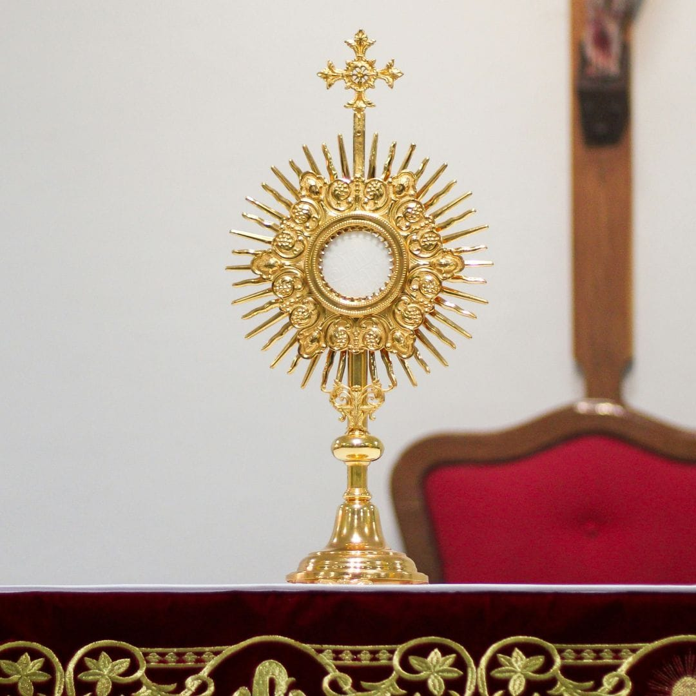
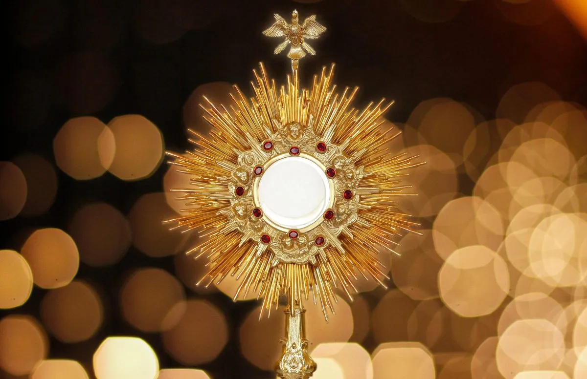
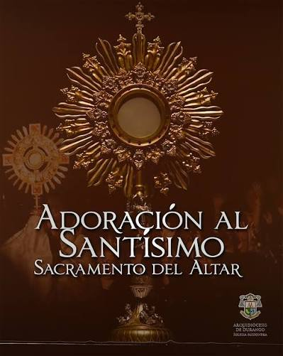

Horarios de Celebraciones y Atención
Misas Diarias
- Martes: 7:00 PM
- Jueves: 7:30 PM
- Viernes: 7:00 PM
- Las misas de sabado varían.
Misas Dominicales
- Mañana: 7:00 AM, 10:30 AM, 12:00 IM
- Tarde: 7:30 PM
Oficina y Confesiones
- Confesiones: Jueves a las 6:30 PM y Sábados de 9:50 AM a 10:50 AM
- Oficina Parroquial: Mar a Sáb (9:00 AM - 1:00 PM) y (5:00 PM a 8:00 PM)
Momento de Oración
Hora Santa Parroquial
Todos los Jueves: 6:30 PM a 7:30 PM
Un espacio de silencio, adoración y encuentro íntimo con Jesús Sacramentado.


